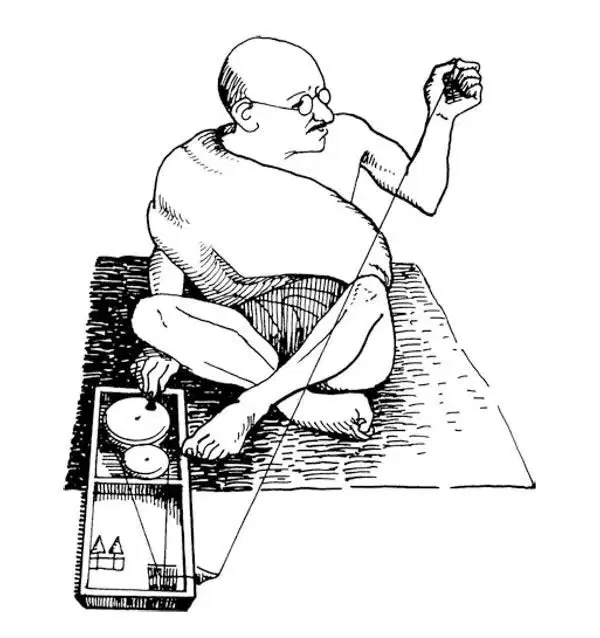

88
A New Spirit in the World
世界新精神

AFTER World War II was over, a lot of people everywhere were talking about making the world a better place. After World War I you remember, most countries of the world joined in a League of Nations to keep new wars from starting; but wars kept right on happening anyway.
After World War II, the countries of the world decided to try again to provide a way for countries to talk with each other to try to solve their differences peacefully rather than by fighting. So they formed the United Nations. The headquarters of the United Nations is right here in the United States, in New York City. Have you ever visited the U.N. headquarters? If you go to New York, you can take a tour of the building and meet people from all over the world who work there.
The United Nations has been more successful than the league of Nations was. Still, there have been a lot of problems that the world has had to face since the end of World War II. I guess it would be too much to expect that the world could get by for very long without any problems. But we can always hope.
Here is one problem that did get solved, at least partly solved, after World War II. The United Nations helped. After the war was over, a lot of people everywhere were talking about making the world a better place. During the war, people had said that it was wrong for Germany and Japan to conquer and rule other countries and their people. After the war was over, some men and women began to ask why some other nations still had the right to rule countries they had conquered earlier. Remember how the industrialized nations had taken colonies to provide their factories with supplies like wood, rubber, cotton, and sugar? Well, after World War II they still had those colonies. In fact, the British colonies were so widespread that the English bragged that, “The sun never sets on the British Empire.” Do you know what this means?
Imagine owning so much of the rest of the world that the sun was always shining on a part of the world you owned. The British owned countries like Ghana and Kenya in Africa, big countries like India, and small islands like the Bahamas and Jamaica. The British were very proud of their big empire. But a lot of people in Africa, India, and the islands of the Caribbean weren't so happy about the British. In fact, they had been talking for a long time about getting rid of those foreigners! And after World War II the British were tired from having fought so hard against the Germans and the Japanese. Besides that, people all over the world were saying that every nation should be able to choose its own government. In this discussion, it was hard for the Americans to take the side of their old ally, the English. Why do you suppose this was true? Do you suppose it's because we remembered our own American Revolution?
Leaders in different colonies worked in different ways to win independence for their people. In some places, men organized armies just as George Washington had organized the American army. In other places, men and women organized less violent protests, like marches and speeches. One of the best known heroes of this time was a man in India named Gandhi.
Mohandas Gandhi didn't look much like the hero of a revolution! He was small and thin. He didn't talk much like a revolutionary leader. He said that people should not be violent in their protests. Now, India was a British colony. Gandhi had decided that the British were, at heart, a moral people, so he felt that he just needed to make them, as well as the rest of the world, see what was right. Then they would grant India its independence without a lot of people being killed.

Gandhi spinning （甘地在纺线）
Gandhi was very clever in thinking up things to do to draw attention to India's desire to become independent. He knew that England kept India to make money from the resources that India provided for England's factories and from the taxes that Indians paid. So he decided to make it harder for England to make money from India.
You know that the English in India had been buying cotton to ship to factories in England. This cot-ton was made into cloth and clothing. Some of the clothing was then shipped back to India and sold at very high prices. The English, of course, kept the profits. Now, before I tell you what Gandhi did, let me tell you what he didn't do. He didn't shoot the English living in India. He didn't burn the fields of cotton. He didn't try to sink the English ships that carried the cotton and later the cloth and clothing. He didn't do any of those violent things to drive the English away. What he did do was this. He asked all Indians to spend several hours a day spinning and weaving their own cloth. This way, they would have plenty of cloth without ever having to buy any more from England. So the English wouldn't be making money, but they also wouldn't have any excuse to come and shoot the Indian protesters either. Wasn't Gandhi a clever revolutionary?
Here's another thing he did. The English collected a big tax on salt. Indians had to have salt to preserve their food because most of them had no refrigerator. So the English had a sure source of tax money. Remember how Americans felt about the taxes they paid to England before the American Revolution? Well, the Indians felt the same way about the taxes they had to pay to England. Gandhi figured out a way to avoid paying the tax on salt without breaking the law. He led a great march to the sea. We all know that ocean water is very salty. Gandhi knew this too. So he led thousands of Indians to the edge of the sea. Once there, he taught them how to make the sea water evaporate. This would leave them lots of salt. In this way his people could have all the salt they needed—without paying the tax and without breaking any law! When soldiers beat the people making salt, people everywhere, even in England, said that the soldiers were wrong.
Gandhi became very famous all around the world. People thought that it was marvelous that he could make such a strong protest without using violence. Finally the pressure on England became too great, and England gave up. Soon after World War II was over, Indians had won their independence.
Once India was independent, other countries followed quickly. Leaders in Africa, like Kwame Nkrumah in Ghana and Jomo Kenyatta of Kenya, won independence for their countries. Algeria became independent from France, but only after a long war. The United States agreed to give the Philippines independence… and so it went all over the world. Country after country in Africa and Asia became independent. Large and small islands in the Pacific and Caribbean became independent. Many of these countries were poor and really had to struggle. Many of them are still struggling, but at least they are no longer ruled by foreigners. Do you know what? They almost all celebrate their Independence Day just as we celebrate the Fourth of July. Wouldn't it be fun to travel all around the world and visit every country on its national holiday? Now that almost every country is independent, that would make a very long trip! Do you suppose they all have fireworks?
【中文阅读】
第二次世界大战结束以后，世界各地有许多人都在谈论要改善这个世界。还记得吧，第一次世界大战以后，为防止战争再次发生，世界上大多数国家加入了国际联盟，但是战争还是不断发生着。
第二次世界大战以后，世界各国决定再努力为国与国之间的对话提供一条途径，以争取不通过战争而通过和平方式解决分歧和争端。于是他们成立了联合国。联合国总部就在美国的纽约市。你参观过联合国总部吗？如果你去纽约，你可以游览一下那栋建筑物，见一见在那里工作的来自世界各地的人。
联合国要比国际联盟有成效。尽管如此，自从第二次世界大战结束以来，这个世界还存在着大量需要解决的问题。我想，期望这个世界长时间平安无事会是一种奢望。但是我们总是要抱有这样的希望。
第二次世界大战之后，有一个问题确实解决了，至少是部分地解决了。联合国起到了作用。战争结束以后，世界各地有许多人都在谈论要改善这个世界。在二战期间，人们谴责过德国和日本，说它们不该侵略和统治其他的国家和人们。战争结束以后，有些人开始提出疑问：为什么仍然有些国家有权统治它们早期征服的国家呢？还记得那些工业化国家如何夺取殖民地，让它们为自己的工厂提供像木材、橡胶、棉花和糖这样的原料吗？那么，二战后，它们仍然拥有这些殖民地。甚至，英国的殖民地分布在世界各地，所以英国人夸口说“在英帝国的土地上太阳永不落下”。你知道这是什么意思吗？
想象一下你在世界各地都有土地，那么太阳总会在你拥有的某块土地上照耀着。英国人拥有的殖民地国家很多，例如非洲的加纳和肯尼亚，还有印度这样的大国和巴哈马和牙买加这样的小岛国。英国人都为自己的大帝国感到非常自豪。但是在非洲、印度和加勒比海群岛上的人民对英国人就极为不满。事实上，他们长期以来一直在议论要摆脱这些外国殖民者！第二次世界大战之后，英国人在结束和德国、日本的艰苦战争后，深感疲惫。此外，世界各地的人们主张每个国家都应自主选择自己的政府。在这场讨论里，美国人很难再支持自己的旧日盟友英国人了。你认为这是正确的吗？为什么？你认为这是因为我们想起了美国独立战争吗？
各殖民地的领导人以不同的方式发挥自己的作用，为自己的人民赢得独立。有些地方，男人们组建军队，反抗殖民者，就像乔治•华盛顿过去组建美国军队一样。另一些地方，男人和女人一起组织非暴力的抗议活动，比如游行和演讲。这一时期最著名的英雄之一是一个名叫甘地的印度人。
“圣雄”甘地看上去并不怎么像个革命英雄！他长得又瘦又小。他讲起话来也不像一个革命领袖那样滔滔不绝。他说人们不应该在抗议活动中使用暴力。当然，印度是英国的殖民地，但是甘地确定英国人本质上是一个讲道德的民族，所以他觉得他只需要让他们和世界上其他人一样，认识到什么是正确的，问题就可以迎刃而解。到那时，他们就会同意印度独立，而不需要很多人流血牺牲了。
甘地非常聪明，总能想出采取什么行动引起人们关注印度要求独立的愿望。他知道英国保留印度这个殖民地为的是从印度供给英国工厂的原材料中赚钱，也为了获取从印度人交的大量税金。于是他决定让英国更难从印度赚钱。
你知道英国人在印度买棉花，用船运到英国的工厂。这些棉花在工厂里制成布料和衣服。其中一些衣服再运回印度，以高价卖出。英国人当然就获得了利润。好了，在我告诉你甘地做了什么之前，让我先告诉你他“不”做什么。他不刺杀住在印度的英国人。他不烧毁田里的棉花。他不试图把运输棉花及后来运输布匹和衣服的英国船只弄沉。他不采用任何暴力的方式驱赶英国人。现在让我们看他做了什么。他恳求所有的印度人一天花几小时自己来纺线、织布。这样做下去，他们就会有足够的布料，不需要再从英国购买了。这样英国人将赚不到钱，但是同时他们也没有任何借口可以枪杀印度抗议者。甘地是个聪明的革命者，是不是？
他还做了另一件事。英国人向印度人征收高额的盐税。印度人必须用盐来保存食物因为大多数印度人没有冰箱。所以英国人有个稳定的税收来源。记得美国独立战争之前美国人对于向英国人交税是什么感受吗？那么，印度人对于向英国交税也深有同感。甘地想出一个办法既可以避免付盐税，又不会犯法。他组织了一次向大海的大行军。我们都知道海水非常咸。甘地也知道这点。于是他带领着成千上万的印度人来到海边。一到那里，他就教他们如何让海水蒸发。这样就可以让他们获得大量的海盐。用这种方法，他的人民就能得到所需要的盐——不用交税，也不犯法！当英国士兵殴打那些制盐的老百姓时，世界各地的人们，甚至包括英国人，都纷纷谴责这些士兵。
甘地变得举世闻名。人们认为他能够不使用暴力就做出这样强烈的抗议真是太了不起了。最后英国所承受的外界压力太大了，英国只得放弃印度的殖民地。第二次世界大战结束后不久，印度人就赢得了独立。
一旦印度独立，其他国家都紧随其后。非洲殖民地领导人，如加纳的克瓦米•恩克鲁玛、肯尼亚的乔莫•肯雅塔，都为自己的国家赢得了独立。阿尔及利亚脱离法国独立，不过，之前经历了一场漫长的战争。美国同意让菲律宾独立……于是这股争取独立的热潮就传遍了全世界。在非洲和亚洲，一个又一个国家独立了。太平洋和加勒比海上的大大小小的岛国独立了。其中很多国家很贫穷，不得不经历艰难困苦。其中还有许多国家直到现在还在艰苦奋斗，但是至少这些国家不再被外国人统治了。真想不到，几乎所有这些国家都像美国庆祝7月4日那样庆祝自己的独立日。如果做一次环球旅游，在每个国家国庆节时到那里去参观，不是很有趣吗？既然差不多所有国家都独立了，那会是一次非常漫长的旅程！你认为这些国家在庆祝的时候都放烟火吗？